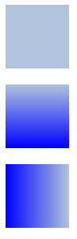

Rectangle QML Type
Paints a filled rectangle with an optional border. More...
| Import Statement: | import QtQuick |
| Inherits: |
Properties
- antialiasing : bool
- border
- border.color : color
- border.width : int
- bottomLeftRadius : real
(since 6.7) - bottomRightRadius : real
(since 6.7) - color : color
- gradient : var
- radius : real
- topLeftRadius : real
(since 6.7) - topRightRadius : real
(since 6.7)
Detailed Description
Rectangle items are used to fill areas with solid color or gradients, and/or to provide a rectangular border.
Appearance
Each Rectangle item is painted using either a solid fill color, specified using the color property, or a gradient, defined using a Gradient type and set using the gradient property. If both a color and a gradient are specified, the gradient is used.
You can add an optional border to a rectangle with its own color and thickness by setting the border.color and border.width properties. Set the color to "transparent" to paint a border without a fill color.
You can also create rounded rectangles using the radius property. Since this introduces curved edges to the corners of a rectangle, it may be appropriate to set the Item::antialiasing property to improve its appearance. To set the radii individually for different corners, you can use the properties topLeftRadius, topRightRadius, bottomLeftRadius and bottomRightRadius.
Example Usage
The following example shows the effects of some of the common properties on a Rectangle item, which in this case is used to create a square:
import QtQuick Rectangle { width: 100 height: 100 color: "red" border.color: "black" border.width: 5 radius: 10 }
Performance
Using the Item::antialiasing property improves the appearance of a rounded rectangle at the cost of rendering performance. You should consider unsetting this property for rectangles in motion, and only set it when they are stationary.
See also Image.
Property Documentation
antialiasing : bool |
Used to decide if the Rectangle should use antialiasing or not. Antialiasing provides information on the performance implications of this property.
The default is true for Rectangles with a radius, and false otherwise.
The width and color used to draw the border of the rectangle.
A width of 1 creates a thin line. For no line, use a width of 0 or a transparent color.
Note: The width of the rectangle's border does not affect the geometry of the rectangle itself or its position relative to other items if anchors are used.
The border is rendered within the rectangle's boundaries.
bottomLeftRadius : real |
This property holds the radius used to draw the bottom left corner.
If bottomLeftRadius is not set, radius will be used instead. If bottomLeftRadius is zero, the corner will be sharp.
Note: This API is considered tech preview and may change or be removed in future versions of Qt.
This property was introduced in Qt 6.7.
See also radius, topLeftRadius, topRightRadius, and bottomRightRadius.
bottomRightRadius : real |
This property holds the radius used to draw the bottom right corner.
If bottomRightRadius is not set, radius will be used instead. If bottomRightRadius is zero, the corner will be sharp.
Note: This API is considered tech preview and may change or be removed in future versions of Qt.
This property was introduced in Qt 6.7.
See also radius, topLeftRadius, topRightRadius, and bottomLeftRadius.
color : color |
This property holds the color used to fill the rectangle.
The default color is white.
The following example shows rectangles with colors specified using hexadecimal and named color notation:
Rectangle { color: "#00B000" width: 80; height: 80 } Rectangle { color: "steelblue" y: 100; width: 80; height: 80 }
If both a gradient and a color are specified, the gradient will be used.
See also gradient.
gradient : var |
The gradient to use to fill the rectangle.
This property allows for the construction of simple vertical or horizontal gradients. Other gradients may be formed by adding rotation to the rectangle.

Rectangle { y: 0; width: 80; height: 80 color: "lightsteelblue" } Rectangle { y: 100; width: 80; height: 80 gradient: Gradient { GradientStop { position: 0.0; color: "lightsteelblue" } GradientStop { position: 1.0; color: "blue" } } } Rectangle { y: 200; width: 80; height: 80 rotation: 90 gradient: Gradient { GradientStop { position: 0.0; color: "lightsteelblue" } GradientStop { position: 1.0; color: "blue" } } }
The property also accepts gradient presets from QGradient::Preset. Note however that due to Rectangle only supporting simple vertical or horizontal gradients, any preset with an unsupported angle will revert to the closest representation.
Rectangle { y: 0; width: 80; height: 80 gradient: Gradient.NightFade } Rectangle { y: 0; width: 80; height: 80 gradient: "NightFade" }
If both a gradient and a color are specified, the gradient will be used.
radius : real |
This property holds the corner radius used to draw a rounded rectangle.
If radius is non-zero, the rectangle will be painted as a rounded rectangle, otherwise it will be painted as a normal rectangle. Individual corner radii can be set as well (see below). These values will override radius. If they are unset (by setting them to undefined), radius will be used instead.
See also topLeftRadius, topRightRadius, bottomLeftRadius, and bottomRightRadius.
topLeftRadius : real |
This property holds the radius used to draw the top left corner.
If topLeftRadius is not set, radius will be used instead. If topLeftRadius is zero, the corner will be sharp.
Note: This API is considered tech preview and may change or be removed in future versions of Qt.
This property was introduced in Qt 6.7.
See also radius, topRightRadius, bottomLeftRadius, and bottomRightRadius.
topRightRadius : real |
This property holds the radius used to draw the top right corner.
If topRightRadius is not set, radius will be used instead. If topRightRadius is zero, the corner will be sharp.
Note: This API is considered tech preview and may change or be removed in future versions of Qt.
This property was introduced in Qt 6.7.
See also radius, topLeftRadius, bottomLeftRadius, and bottomRightRadius.